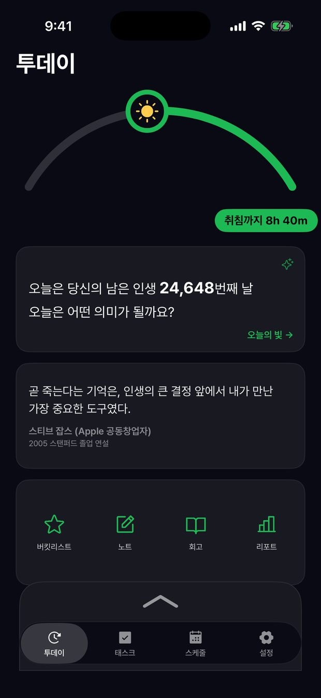
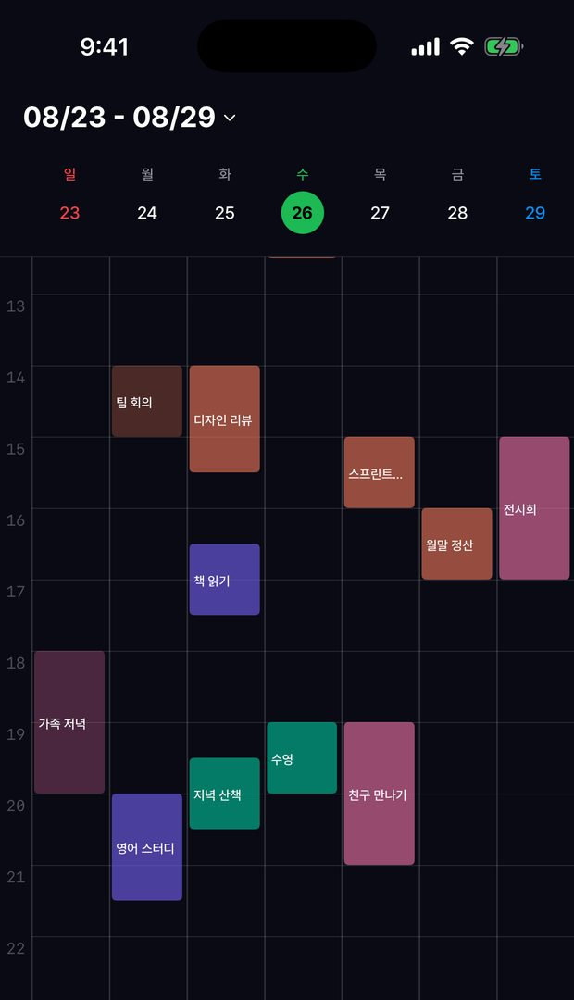
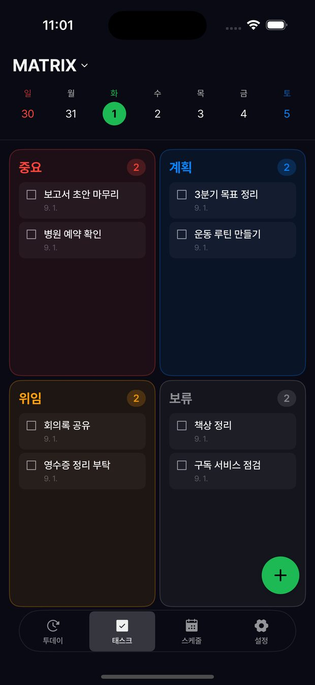
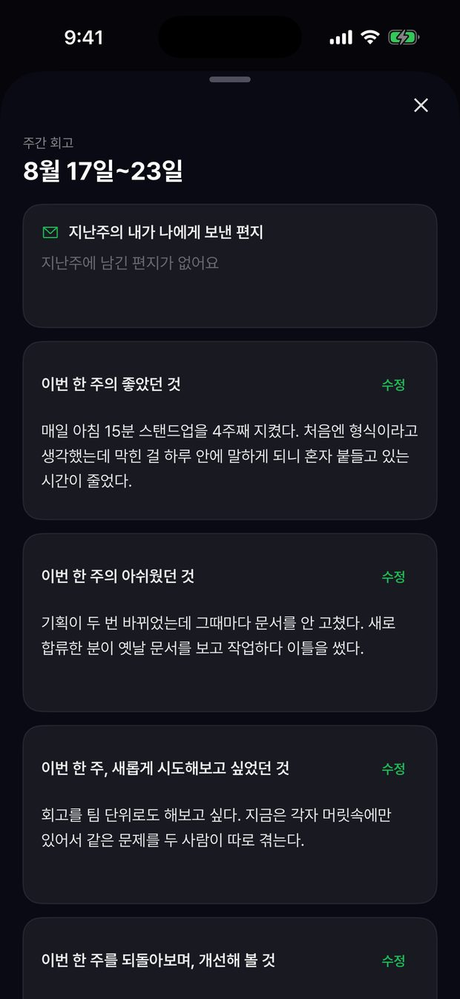
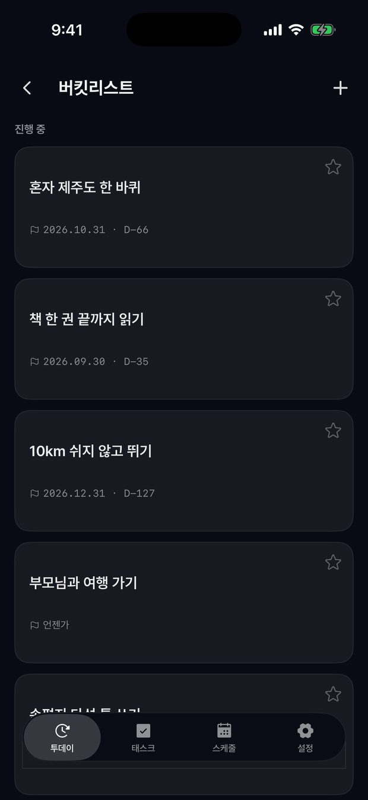

우리는 시간이 무한한 듯 살아갑니다. Lunarc은 남은 시간을 가만히 비춰, 오늘 하루를 더 또렷하게 바라보도록 돕습니다. 두려움이 아니라 지금 이 순간의 소중함을 깨우는 각성입니다.

기상부터 취침까지 오늘 남은 시간을 하루 호로 그립니다. 지나간 시간과 남은 시간이 함께 놓여, 계획이 아니라 감각으로 하루를 붙잡습니다.
일간·주간·월간 타임라인으로 일정을 직관적으로 계획합니다. 드래그 한 번으로 시간을 옮기고, Apple·Google 캘린더와 연동해 흩어진 일정을 한곳에서 봅니다.

중요도와 긴급도로 나눈 네 칸에 할 일을 놓습니다. 무엇을 먼저 할지가 눈에 보입니다.

좋았던 것, 아쉬웠던 것, 새로 시도해보고 싶은 것. 매주 네 가지 질문으로 한 주를 정리합니다.

미루기 쉬운 일에 날짜를 붙여 둡니다. 남은 날이 함께 표시되어 잊히지 않습니다.

오늘의 질문에 한 문장을 남기고, 다른 사람이 흘려보낸 짧은 통찰과 위로를 만납니다. 닉네임으로만 오갑니다.
월 구독 · 연 구독 · 평생 이용권 중 선택할 수 있습니다. 캘린더 연동을 비롯한 핵심 기능은 무료로 제공됩니다.
기획 · 디자인 · 개발 · 출시 · 운영을 혼자 맡고 있습니다. 어떻게 만들었고 무엇을 근거로 결정했는지 따로 정리해 두었습니다.